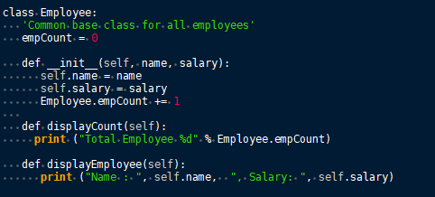

Index
- Images
- Tables
- Codebox
- Files
- Links
- Anchors
- Table of Contents
- Timestamps
- Special Characters
- Horizontal Rule
Automatic Syntax Highlighting
Automatic Syntax Highlighting
Automatic syntax highlighting styles text with a readable color scheme that corresponds with the grammar of a language.
Figure 7.01

Choosing a Language
1. Open the Node Properties menu by right-clicking a node and selecting Change Node Properties.
2. Choose Automatic Syntax Highlighting.
3. Click the drop-down menu directly beneath the Node Type options.
4. Choose from the list of supported languages.
Executing a Node
Nodes set to automatic syntax highlighting can be executed from Cherrytree, assuming you have its assigned language installed to your machine.
To execute a node:
1. Select Execute Code from the File menu.
2. When prompted, click OK to confirm that you want to execute the code.
Some languages require an execution command to be assigned to the language before the code can be executed.
See Plain Text and Code for details on assigning a command.
Supported Languages
• ada
• asp
• awk
• bibtex
• boo
• c
• c-sharp
• cg
• changelog
• chdr
• clisp
• cmake
• cpp
• css
• cuda
• d
• desktop
• diff
• docbook
• dosbatch
• dot
• dpatch
• dtd
• eiffel
• erlang
• fcl
• forth
• fortran
• fsharp
• gap
• gettext-translation
• glsl
• go
• groovy
• gtk-doc
• haddock
• haskell
• haskell-literate
• html
• idl
• ini
• java
• js
• latex
• libtool
• lua
• m4
• makefile
• mallard
• markdown
• markdown-extra
• msil
• nemerle
• nisi
• objc
• objective-caml
• ocl
• octave
• ooc
• pascal
• perl
• php
• pkgconfig
• powershell
• prolog
• python
• python3
• r
• rpmspec
• ruby
• rust
• scala
• scheme
• sh
• sparql
• sql
• t2t
• tcl
• texinfo
• vala
• vbnet
• verilog
• vhdl
• xml
• xslt
• yacc
• yaml